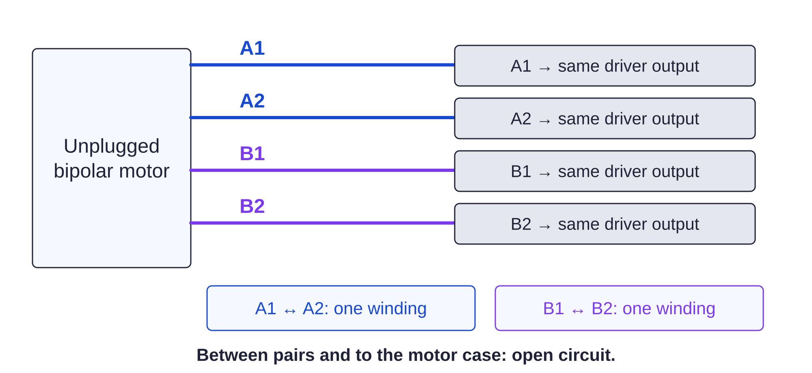

Controller / motor harness118 / 179
Identify the two motor windings
A bipolar motor has two isolated continuity pairs. Record the received colors rather than assigning winding identity by color alone.
Add6 GX16-4 motor pairs · paired motor wires · axis labels
Tools / setupAll power unplugged · ohmmeter · ferrule crimper

- Unplug the motor from every driver. Find exactly two finite-resistance continuity pairs.
- Assign one pair A1/A2 and the second B1/B2; record actual colors and plug positions.
- Crimp/land each complete pair at its named driver outputs. Twist the wires within each pair.
- Label both ends by axis and secure a service loop clear of travel.
Ready when
Each motor has two winding pairs and no continuity between those pairs or from a winding to its case. A crossed pair or case connection fails the winding map. Correct the unplugged harness before driver insertion; never hot-plug a motor.